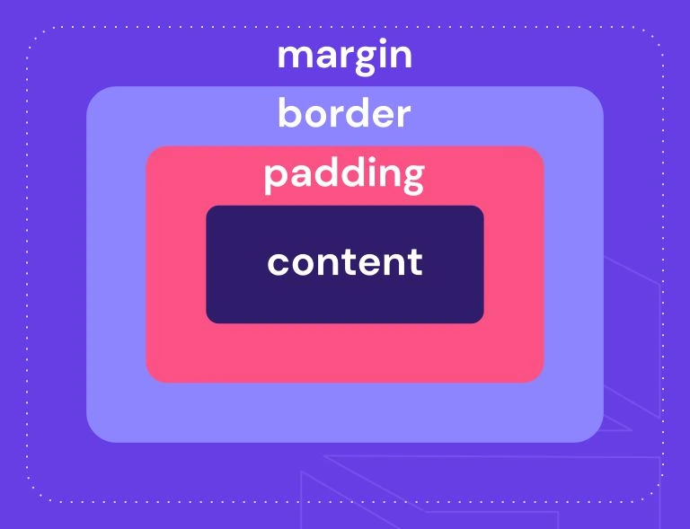

CSS (Cascading Style Sheets)
Que Es Y Su Importancia En La Programacion?.
es un lenguaje de hojas de estilo que se utiliza para definir la apariencia y el diseño de las páginas web. Su principal función es separar el contenido (HTML) de la presentación visual, permitiendo controlar aspectos como colores, fuentes, espaciado, distribución y animaciones.
Gracias a CSS, los desarrolladores pueden diseñar sitios web atractivos, responsivos y accesibles, asegurando una experiencia de usuario óptima en distintos dispositivos y tamaños de pantalla.
CSS es clave en el desarrollo web, ya que no solo embellece las páginas, sino que también mejora su funcionalidad y accesibilidad. Su uso adecuado ayuda a crear experiencias web atractivas, rápidas y adaptables a cualquier pantalla, lo que lo convierte en un pilar esencial del diseño y desarrollo web moderno
Por que Es tan Importante?
- Da estilo a las páginas web
- Sin CSS, las páginas web se verían planas y sin diseño (solo texto y estructura básica).
- Con CSS, puedes aplicar colores, cambiar fuentes, definir fondos y más.
- Permite hacer páginas responsivas
- CSS facilita que un sitio web se adapte a diferentes tamaños de pantalla (computadoras, tablets, móviles).
- Se logra con media queries.
- Mejora la experiencia del usuario (UX)
- Una página bien diseñada es más atractiva y fácil de usar.
- Facilita la navegación y mejora la accesibilidad.
- Se combina con HTML y JavaScript
- HTML estructura el contenido.
- CSS lo diseña y le da estilo.
- JavaScript añade interactividad.

| Nombre Del Atributo |
Descripcon |
Valores Posibles |
Ejemplo De Uso |
Imagen Representativa |
Fuente De Informacion |
| font-size |
Define el tamaño del texto. |
px, em, rem, %, vw, vh, small, medium, large |
p { font-size: 20px; } |
|
MDN - font-size |
| border-radius |
Redondea las esquinas de un elemento. |
px, % (ejemplo: 50% para círculos) |
div { border-radius: 10px; } |
|
MDN - border-radius |
| display |
Define el tipo de visualización de un elemento. |
block, inline, flex, grid, none |
div { display: flex; } |
 |
MDN - display |
| flexbox (display: flex;) |
Habilita un diseño flexible para organizar elementos. |
flex, inline-flex |
div { display: flex; justify-content: center; } |
 |
MDN - flexbox |
| position |
Controla la posición de un elemento en la página. |
static, relative, absolute, fixed, sticky |
div { position: absolute; top: 20px; left: 50px; } |
|
MDN - position |
| box-shadow |
Agrega una sombra a un elemento. |
h-offset v-offset blur spread color |
div { box-shadow: 5px 5px 10px rgba(0,0,0,0.5); } |
|
MDN - box-shadow |
| overflow |
Controla el comportamiento del contenido que excede el tamaño del contenedor. |
visible, hidden, scroll, auto |
div { overflow: scroll; } |
|
MDN - overflow |
| z-index |
Controla la superposición de elementos. |
Número positivo o negativo |
div { z-index: 10; } |
|
MDN - z-index |
| opacity |
Define la transparencia de un elemento. |
Valores de 0 (transparente) a 1 (opaco) |
div { opacity: 0.5; } |
|
MDN - opacity |
| margin y padding |
Controlan el espacio externo (margin) e interno (padding) de un elemento. |
px, %, auto |
div { margin: 10px; padding: 20px; } |
 |
MDN - margin, MDN - padding |
| background-color |
Define el color de fondo de un elemento. |
Nombre de color, rgb(), hex, hsl() |
div { background-color: #ffcc00; } |
|
MDN - background-color |
| transition |
Agrega una animación de cambio suave entre propiedades CSS. |
all 0.5s ease, opacity 1s linear |
div { transition: all 0.3s ease-in-out; } |
|
MDN - transition |
| max-width y min-width |
Establecen un ancho máximo o mínimo para un elemento. |
px, %, vw |
div { max-width: 600px; min-width: 200px; } |
|
MDN - max-width, MDN - min-width |
| animation |
Permite crear animaciones en CSS. |
animation-name duration timing-function |
div { animation: fadeIn 2s ease-in; } |
|
MDN - animation |